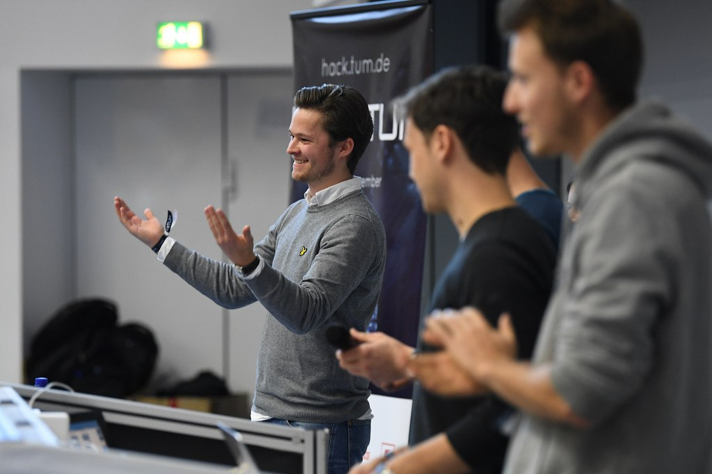

Copyright: Patrick H
Winner HackaTUM 2018, AID Challenge
What I did
At the hackathon my team and I chose to develop a prototype for autonomous taxis to be called without the necessity of app-usage. The project was primarily set against the background of the democratisation of modern technologies. For example, elderly people who are not familiar with apps should not be excluded from mobility. We implemented a hailing detection into a small framework for taxi-communication (Visit our project on Devpost)
What I learned
- Teamwork in a diverse team
- Communication between experts, focussing and redeveloping our vision